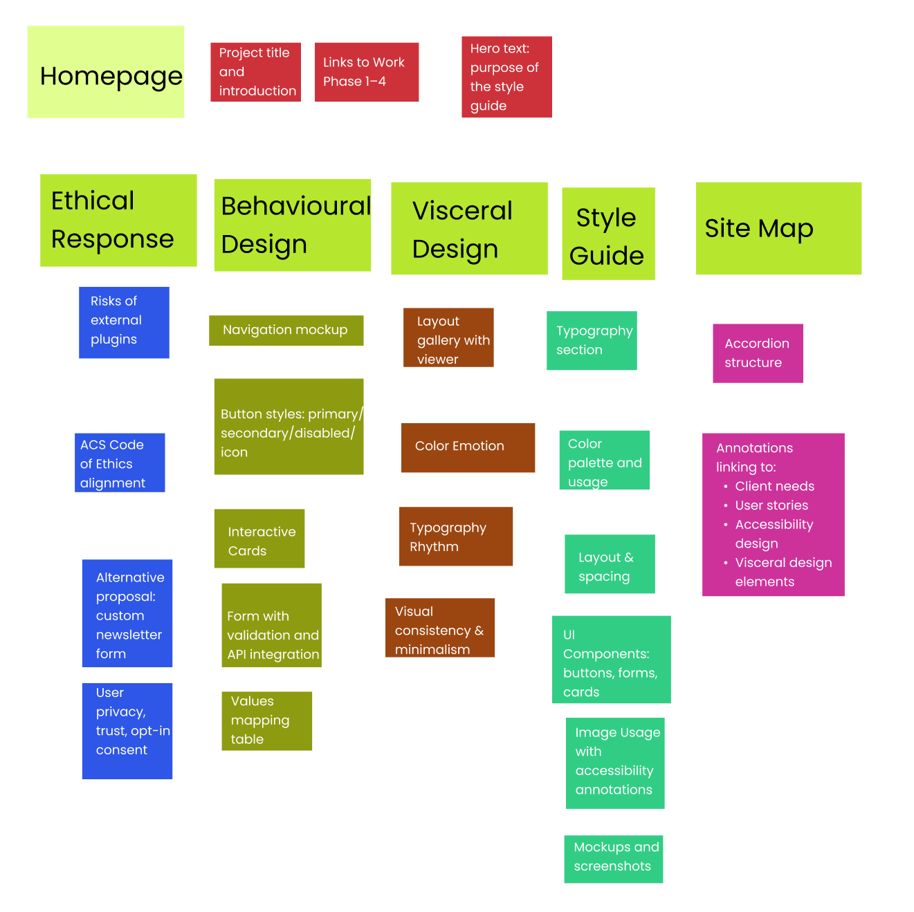

Site Map

Central hub for positive stories and
intergenerational inspiration.
Client Need: Empowerment
& belonging
User Story: "As an older adult,
I want to share my gardening experience."
Accessibility: Clear navigation
and keyboard-focus.
Visceral: Warm visuals and
friendly tone.
Showcases intergenerational
gardening projects.
Design Principle:
Visual identity connects to comic
style (see
Visceral Design).
A space to foster trust, connection, and
contributions from users.
Client Need: Reduce
isolation
User Story: "As a youth, I want
to connect with older generations."
Accessibility: Color contrast,
readable typography
Visceral: Includes comforting
comic-style avatars and messaging.
Real user stories dynamically loaded from API. See implementation in Behavioural Design.
Includes accessible form with clear ARIA labels, live feedback, and validation. See Form Section.
Core components for consistency and reuse.
Client Need: Maintainable
UI
User Story: "As a site
maintainer, I want consistent design patterns."
Includes typography, color palette, layout system and reusable UI components. See Style Guide.
Emphasizes first impressions and emotional response through layout and image styles. See Visceral Design.
Interactive design that guides user actions (buttons, cards, forms). See Behavioural Design.
Ethics response to client plug-in request, and
AI usage disclosure.
Client Need: Trust &
transparency
Accessibility: Informed consent
and data protection.
See Ethical Response page outlining alternative to third-party plug-ins.
Disclosure of GenAI/MT use in Work Phase 2. See GenAI Acknowledgement.